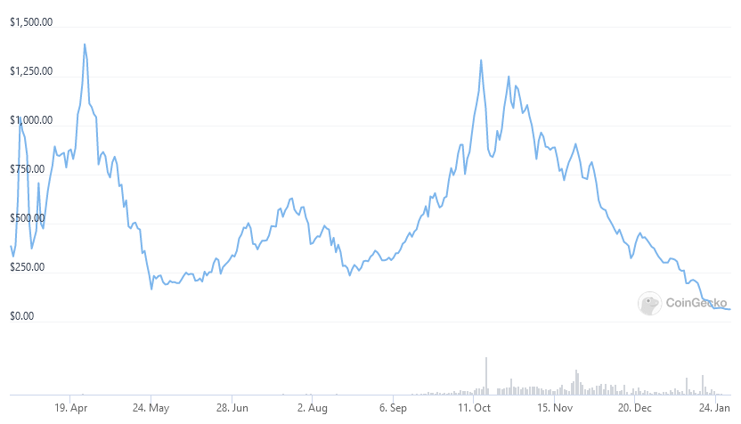
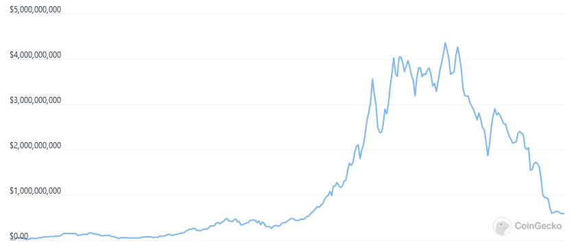

RSS Feed
RSS Feed
Olympus DAO from Primary Sources
15 Feb 2022If you're following decentralized finance (aka DeFi), you've probably heard about OlympusDAO.
OlympusDAO describes itself as a "decentralized reserve currency". In the non-crypto worlds, a reserve currency is a foreign currency held by other governments to back and stabilized their own currency. Interestingly, OHM is itself a currency backed by a reserve ("the treasury") of other assets (mostly stablecoin and OHM-stable LP tokens, but also some ETH). I don't think Olympus works as a reserve currency at all, but I will defer this discussion to another article.
In this article, I want to look at what Olympus actually does, and I want to do so by digging straight into the code.
I'm doing this because OlympusDAO has been the subject of a lot of talk over its short history, but I never really manage to understand how it works. There is a lot of narrative to be found, but very little mechanistic explanations — at least not enough to answer most of my question. What I read about it also didn't seem to make sense from an economic standpoint, but this was impossible to determine without establish ground truth on OlympusDAO's inner workings.
So why were people talking about Olympus you ask? First, look at this chart:

Quite volatile (up 4x, down 6x, up 6x, down 12x), but nothing extraordinary for crypto. No, what is incredible is that this is while OlympusDAO was offering stakers interest rates (aka APY) of thousands of percents (> 1700% as we speak). These interest rates are, importantly, denominated in OHM. Who wouldn't be enticed?
However, all of this comes with a caveat, in a word: inflation.
Over the last week, OlympusDAO (and its forks, most notably Wonderland) have come under fire for the massive drop in prices they have experienced, putting the market cap of OHM very close to the value of its treasury (which logically is the smallest possible price, just how a company should at least be worth at least at much as its assets minus its debts). Wonderland even periodically dipped under its treasury value.
The market capitalization chart (which is in many ways much more relevant than the price charts, because of inflation) for OHM tells of its meteoric rise, and recent fall:

In a subsequent article, I will dive deep into the economics of OlympusDAO and how the current situation is not all that surprising. I will say right now that I do not think Olympus is a scam or a ponzi scheme (which many people accuse it of being). I do think the communication about the project has been somewhat deceitful. At the very least, impressive elements — like the OHM-denominated APY — have been emphasized, while immense caveats have been ommitted from the discourse.
Summary of Findings
This is going to be a long and technical article. For those that are just interested in the take aways, here they are:
- The total supply of $OHM inflates at the staking reward rate every ~8 hours. This inflation is redistributed among stakers. The inflation distribution event that happens every 8 hours is called a rebase.
- The staking reward rate is set by the OlympusDAO policy team. For the longest time, this reward rate was 0.35%. It is currently 0.2%, on its way down to a target of 0.16%. At 0.35%, this implies an inflation of 4487%. This is also the minimum staking APY in OHM (if 100% of the OHM is staked, otherwise it will be higher). At 0.16%, this implies a 475% inflation (yup — exponentials are weird).
- OlympusDAO has a treasury composed of stablecoins and OHM-stablecoin liquidity pool (LP) tokens. The treasury is constituted by selling bonds (see below).
- A central concept is the "risk-free value" (RFV) of the treasury. This is simply 1$ for stablecoin. For LP tokens, it is the price the token would take if the OHM price fell to 1$. Controversially, this means that part of the RFV of the treasury is made of OHM tokens (in the liquidity pools).
- Rebases can only go through if there is 1$ of risk-free value in the treasury for each OHM in existence including the newly-minted ones. This sets a soft-floor if 1$ on the OHM price, assuming that the OHM market cap should always be at least as large as the risk-free value of the OHM treasury.
- The protocol maintains a metric called "the index" which is how much OHM you would own if you staked a single OHM on the day the protocol launched (currenty 74). Recently, Olympus launched the gOHM ("governance OHM") which "wraps" the indexed amount of staked OHM. The main avowed purpose was to enable the trading of staked OHM on other chains.
- Staking comes with an optional warm-up period (currently disabled) which forces people to wait a configurable amount of time before their OHM tokens are staked.
- At any time, people can purchase OHM bonds using various stablecoins and OHM-stablecoin LP tokens. The policy team can add, remove or tweak these bond markets. The bonds are usually sold as a small discount to the OHM market price. The bonds grant newly minted OHM tokens to the buyer. These tokens vest over a configurable period, which has always been 5 days.
- The DAO takes a (configurable) fee over every bond sale, although this is currently set to 0, and it's rather hard to search historical state to see if it was ever set differently.
- Bond pricing uses a notion of risk-free value (RFV). The risk-free value of stablecoins is equivalent to their market value. For LP tokens however, Olympus assumes a worst-case scenario where OHM is worth 1$, and prices the LP tokens accordingly.
- Bonds are priced differently depending on the token used to purchase the
bonds. The bond price is determined by the formula
bondPrice = min(BCV * debtRatio + 1, minimumPrice), where:
One bond grants one OHM after the vesting period.
For simplicity, I ignore the decimals on
minimumPriceandbondPrice(assume those are infinite precision numbers), and assume thatdebtRatiois a value between 0 and 1.BCVis the bond control variable, set by the policy team for each tokendebtRatiois a ratio between (a) the risk-free value of all tokens used for bond purchases (tallied at the moment of purchase) scaled by the remaining vesting time; and (b) the total OHM supply.Note that the numerator and the denominator have different units (risk-free USD and OHM), and consequently, the debt ratio rises faster when the OHM price is high.
minimumPrice— as the name indicates. However, once a bond purchases occurs above the minimum price, it is then set to 0, allowing subsequent purchases to occur below the bond price.
There is maximum amount of debt (denominated in risk-free value) allowed per token, preventing the emission of too many bonds, and offering some protection against attacks (e.g. if a stablecoin was to lose his peg).
Because the formula is not based on the market price of OHM, the bond price can occasionally exceed the market price!
I tried to explicitly stay away from the economical implications. As said before, these will be the subject of a subsequent article!
In what follows, I will dive into the contracts themselves. Together, we'll learn where all of the above functionality is implemented, and how.
Table of Contents
- Top
- Summary of Findings
- Olympus v1.1 vs Olympus v2
- Contracts
- Basics & Staking
- Bonding
- Stablecoin Bond Pricing
- Liquidity Token Bond Pricing (This section explains the Risk-Free Value computation for bonds.)
- Bonding in Depth
- Example
Olympus v1.1 vs Olympus v2
The present investigation was on conducted on the 1.1 version of the protocol. This is because I started this a long time ago in mid-December, and didn't realize that the v2 of the protocol was already launched, excepted the v2 bonds (which are now live too).
Olympus v1.1 was apparently intended as an intermediary milestone to facilitate the deployment of v2.
The particular code I investigated is the 1.1 codebase as can be
found in the Version-1.1 branch on Github.
Annoyingly, it looks like not all the code of that repository was deployed as such. For instance, the OHM contract is not identical to its first deployment (verified in March 2021) nor to its second deployment (verified in December 2021 and matching the v2 code).
If you want to investigate the latest deployed v2 codebase, check out the tree at this commit, which merges in the v2 bonds.
That being said, as far as I was able to determine, the protocol did not change significantly between v1.1 and v2. The major change seems to be that bonds no longer vest linearly but immediately stake OHM which can be redeemed at expiry (this will be repeated below, in the appropriate context).
The other change is the start of on-chain governance via the gOHM token (representing an indexed amount of sOHN, as mentionned in the take-aways). This doesn't affect the behaviour of contracts, however.
If you follow throught this article, you'll have a thorough enough understanding that understanding the v2 contracts should be a breeze.
The v2 codebase seems vastly improved, and most likely assuages some of the complaints I make below!
You might also want to read this deep dive on Olympus v2 bonds for an alternative analysis, focused on v2.
Contracts
Before we dig into the protocol's internals, let's inventorize the contracts, both for v1.1 and v2 deployments. In particular, the OlympusDAO documentation is not yet updated to list the addresses of the v2 contracts.
If you consult the doc, you'll note that some contracts have many versions which are dubbed v1, v2, v3, v4, ... It goes without saying that these version bear no relationship to the protocol versions (v1.1, v2, ...).
As said earlier, the v1.1 source does not always match the deployment (some contracts were tweaked that were not deployed), so it may happen that the source file I link does not match the deployed contract. You can check this by comparing the verified source code in the contract/code tab agains the GitHub source.
v1.1 Contracts
- OlympusERC20.sol (source)
- Owned by this EOA address
- sOlympusERC20.sol (source)
- Staking.sol (source)
- StakingHelper.sol (source)
- StakingWarmup.sol (source)
- StakingDistributor.sol (source)
- Treasury.sol
In v1.1, there is one bonding contract per token that can be used to purchase bonds. I will only list the DAI and OHM-DAI contracts, to serve as examples:
- List of Bond Contracts
- e.g. DAI Bond
- e.g. OHM/DAI LP Bond
- Bond Calculator Contract
- older deployment used by the newest OHM/DAI LP bond
- newer deployment used by the newest OHM/FRAX LP bond
- the code in those two are exactly identical!
There are also some contracts related to governance and operations:
- DAO
- Proxied to Gnosis Safe (github source)
- List of signers (4 of 7)
- Policy
- Also proxied to Gnosis Safe
- List of signers (3 of 5)
v2 Contracts
- OlympusAuthority.sol (source)
- This replaces the "Policy" from v1.1 and also owns the ERC-20 contract.
- OlympusERC20.sol (source)
- sOlympusERC20.sol (source)
- Staking.sol (source)
- v2 does not have separate warmup & helper contracts — instead the
functionality is merged in
Staking.sol
- v2 does not have separate warmup & helper contracts — instead the
functionality is merged in
- StakingDistributor.sol (source)
- Treasury.sol (source)
- BondingDepository.sol
- gOHM (source)
- The DAO contract is the same as before.
A big difference in v2 is that there is a single deployed bonding contract, which handles all tokens (unlike v1.1, which has one deployed contract per token).
v2 has also other contracts, but I haven't reviewed those, so I'll limit myself to establish this mapping will the old contracts. Also note that the v2 codebase splits interface and imports away from the main contract to be deployed, unlike 1.1.
Upgrade Paths
Olympus uses very few proxy (only for the DAO and the v1.1 policy contract). Yet they were able to deploy many new versions of contracts.
These upgrade paths are not explicit in the code (which is a shame), but I do believe some thoughts went into them.
Often, upgrades entails co-existence. For instance, the v1.1 staking contract still "works" if you staked your OHM in it and haven't migrated to v2. However, the old contract does not accept new stakers anymore (this can be achieved by setting some configurable values (e.g. addresses) so that new attempts to stake on the old contract revert).
In the future, it's possible that Olympus might be able to "disable" some old contracts. For instance, it could suspend rebases in the old staking contract (by modifying the address of the distributor), forcing people to migrate if they want to keep earning yield.
That being said, the lack of proxys does not mean that the protocol is "decentralized". In fact, the policy/authority multisig has the ability to change a lot of variables, including contract addresses!
Basics & Staking
Let's begin our dive into the contracts! First, let's get the easy stuff out of the way:
The OlympusERC20.sol contract is a straightforward ERC-20 token contract implementation. It is owned by an EOA (Externally Owned Account). This is not very secure, but is fixed in Olympus v2, where the owner is remplaced by the Olympus authority contract, which is in turn controlled by a multisig Gnosis safe.
Minting privileges are given to the "vault" which is the Treasury.sol contract.
The DAO contract is simply a Gnosis safe, which lets a majority of signers do whatever with the funds held by the DAO contract.
Intro to Rebases & sOHM Balances
The sOlympusERC20.sol contract is also an ERC-20 implementation, this time for the staked OHM token (sOHM, which you receive in exchange for your OHMs after you stake). However, the contract also implements part of the "rebase" logic.
In Olympus parlance, a rebase is the thrice-daily inflation event. It used to be set at 0.35% for a long time, but is now sitting at 0.2%, subject to changes by the Olympus policy team. During each rebase, the newly minted tokens are auto-staked and distributed to the stakers proportionally to their existing stake.
Because of the frequent rebases, sOHM balances are constantly in flux. They change automatically, without users needed to submit transactions to claim.
The way this is implemented is rather ingenious. The contract does not maintain sOHM balances: this would be too expensive, as every rebase would need to touch every single balance. Instead it maintains a balance of "gons" (I don't know where the term comes from). Whenever a rebase occur, the gon balance does not change — only the total pot of OHM owned by the staking contract is increased. A user's sOHM balance is the fraction of the OHM pot equal to its gon balance divided by the total gon supply. This is also the amount of OHM the user would receive if unstaking his whole sOHM balance (one sOHM always corresponds 1-1 to one OHM in the staking contract).
The sOHM contract itself defines only part of that logic. It has a
rebase(uint256 profit_, uint epoch_) function, callable only by the staking
contract. The profit_ here is the amount of sOHM that is to be distributed in
the rebase. The logic in that function ensures that the sum of the balances of
all stakers is increased by this amount.
Now we must tackle a peculiarity in the contract code I cannot quite explain.
Instead of letting the staking contract mint the sOHM whenever it receives OHM,
the sOHM contract allocates 5*10^15 (or 5 million billion) sOHM to the staking
contract. Whenever the staking contract receives OHM, it sends a corresponding
amount of sOHM from his own balance to the staker. I assume there must be a
reason for this, but it is not obvious. The contract also calls sOHM
"fragments", though I'm not quite sure why. (It could be to better differentiate
them from gons, and avoid using ambiguous terms like amount, but the contract
does that sometimes anyway.)
EDIT: iND1G0 points out the terminology is inherited from Ampleforth, an algorithm stablecoin. This explanation from the home page is pretty eloquent:
When Price > $1, wallet balances Increase proportionally When Price < $1, wallet balances Decrease proportionally
This sOHM allocation to the staking contract also means that the sOHM contract
must distinguish between the total supply and the circulating supply (which
excludes the staking contract's balance), and that the rebase function must
inflate the total supply by more than the profit_ parameter, in order for the
circulating supply to be inflated by profit_ and be effectively accrued to the
stakers. The staking contract balance inflation is irrelevant (since it's only
ever exchange for OHM that was staked, or to reward lockers — see later).
An interesting thing to note is that the staking contract's sOHM balance is not backed by underlying OHM. This is fine because (a) when staking, users exchange OHM for sOHM 1-1 with the staking contract and (b) when rebasing, the distributor contract mints OHM for the staking contract 1-1 with the reward (see later).
Staking & Unstaking
The abstract idea of staking is pretty easy: you send X OHM to the staking contract, and the staking contract sends you X sOHM in return. Unstaking is the same, but in reverse.
In pratice, it's a bit more involved because the contracts introduce a notion of warmup, which is not currently used.
To stake, you call the stake(uint _amount, address _recipient) function, which
receives your OHM, and sends sOHM to the StakingWarmup.sol contract on
your behalf. Then, after the warmup period (warmupPeriod, currently 0), you
can call claim (address _recipient) to transfer the sOHM locked in the warmup
contract to your own balance.
Because the warmup period is currently 0, you could do both calls in a single
transaction. For this purpose, Olympus has deployed the
StakingHelper.sol contract whose stake(uint _amount) function
does exactly this. Additionally, the recipient is implicitly the sender.
You can cancel the warmup period and reclaim your OHM with the forfeit()
function, and you can prevent other people from staking OHM for you using
toggleDepositLock() (my best guess is that this is just for extra protection,
so that a contract that you've authorized to handle your OHM can't unstake your
sOHM).
Rebases in Depth
Rebases are initiated by calling the rebase() function of the staking
contract. Anybody can call the function, as long as a rebase is due.
The function is also automatically called when someone stakes some OHM!
rebase() does four things:
- Check if a rebase is due via the current epoch (see below), otherwise return.
- Call
sOHM.rebase(uint256 profit_, uint epoch_) - Call
distributor.distribute()(ifdistributor!= 0) - Update the current epoch.
The current epoch, held in the epoch variable tracks the length of the
epoch, its number, its deadline endBlock (indicating when rebase() can be
called), and distribute (the amount of sOHM to be distributed during the
rebase).
In the first step, we simply check epoch.endBlock <= block.number. If that's
alright, we call sOHM.rebase(epoch.distribute, epoch.number), which works as
described above.
Then we (possibly) call distribute() on the distributor
contract. Here is how the documentation misleadingly describes it:
The distributor contract receives minted OHM from the treasury in order to drip-feed rewards to stakers. The reward rate target as of time of writing is set to 3500, which translates to 0.35% of total supply, since the reward rate is defined in tens of thousands. Note that the reward rate determines the rebase rate and that the rebase rate determines the APY. Below are listed distributor contracts by version, where the latest version represents the currently active contract.
This makes it sound like the distributor is the one that gives out rebasing reward. As we've seen before, this would be too expensive, and it's actually done by the sOHM contract.
In reality, the role of the distributor is to send OHM to the staking contract
in a way that is commensurate with the rebase amount (profit_ from above).
However this mechanism is fully generic and does not encode a direct dependency
on the staking contract. Let's see how it works briefly.
Skipping over the fine details, what distribute() does is distribute OHM
rewards (minted from the Treasury contract via its
mintRewards(address _recipient, uint _amount) function) to "recipients" which
are added/removed through the addRecipient and removeRecipient functions.
These functions are only callable by the policy multisig (which is the current
value of _policy in the distributor contract). addRecipient also takes an
individualized reward rate for every recipient.
If you query the latest version of the distributor contract on Etherscan, you'll see that the (latest version of the) staking contract is currently the only recipient.
An important detail about mintRewards is that it will refuse to mint OHM if
the risk-free USD value of the reserves is inferior to the OHM supply
(denominated in OHM), effectively setting a lower bound price of 1$ on OHM,
fully backed by the treasury. Fun fact: mintRewards reverts in that case,
which means any attempt to trigger further rebases or to stake more OHM will
revert too. (This could be sidestepped by removing the staking contract as
distribution recipient, but it would be useless to stake in the absence of
rebases anyhow.)
Is the staking profit_ connected in any way with the treasury's reward?
Actually yes. This is done during step 4 of the rebse, when updating the current
epoch.
The distribute field of the epoch is set to the OHM balance of the staking
contract minus the circulating supply of sOHM (remember the circulating excludes
the staking contract's own sOHM balance). This ensures that we can only
distribute staking rewards if there is more OHM in the staking contract than
owned by users, guaranteeing that every sOHM can be redeemed for an OHM.
As a consequence of calling distribute() earlier, this OHM balance of the
staking contract increased, distribute will be set to the the OHM reward from
the distributor, and will be distributed as sOHM during the next epoch.
The distributor contract also has logic handling what it calls "adjustments"
which are a way to smooth a reward rate transition from the current rate to a
target rate, with the reward rate being updated incrementally during each epoch
(when distribute() is called) until the target rate is reached.
Locker
A little mystery lives in the v2 staking contract (the one from Olympus v1.1 that we are considering here): the notion of "locker".
The contract has a function giveLockBonus(uint _amount) which transfers a sOHM
"bonus" to a "locked staking contract" (the locker contract variable). This
function is only callable by the locker, which can also ostensibly return the
bonus via returnLockBonus(uint _amount).
The locker does not appear in either the v1 or v3 contract, and is now set to the zero address in the v2 contract. My best guess is that it is a crutch used to upgrade the Olympus deployment, though I'm not sure how and why.
sOHM Index
If you go to the Olympus DAO App, you can see it features the "current index" (74 at the time of writing), with the description:
The current index tracks the amount of sOHM accumulated since the beginning of staking. Basically, how much sOHM one would have if they staked and held a single OHM from day 1.
This notion also appears in the sOHM contract. The index is set once (via
setIndex(uint _INDEX)), to an initial sOHM amount, which is converted to a gon
balance and stored internaly as INDEX. (Remember, gon balances do not change
when rebasing and are used to track fractional ownership of all the sOHM.)
Calling index() returns the amount of sOHM now controlled by this initial sOHM
amount, if it was staked at contract inception.
During the first sOHM contract deployment, the initial INDEX was the gon value
for 1 sOHM. Each time the sOHM contract is upgraded, the value returned by
index() needs to carried over as the new INDEX value in the new contract.
Bonding
The goal of bonding is to sell OHM at a small discount (at least, usually) in the form of bonds that vests linearly over a small period of time (currently 5 days).
"Linear vesting" means that after one day you can already withdraw 1/5 of the OHM, etc (at the time resolution of blocks ~= 13s).
The bond purchaser makes a small profit, but takes on price risk. More on the purpose of bonding in the economic analysis part.
In "bonds v2", there is no longer linear vesting. Instead the purchased OHM is staked and can be claimed at the end of the period. This increases risk for bond holder who can't dump at least part of their OHM before expiry, but solves the problem that the discount rate is actually misleading because the OHM supply inflates during the vesting period (by about 3% at the current rebase reward rate).
Bonds are sold for various assets (called principle or sometimes reserve in
the contracts), which are either stablecoin or OHM-stablecoin LP tokens. There
is one contract for each asset, instantiated from the BondDepository.sol file.
For instance:
v2 only has a single contract to handle all bonds.
We'll look at how bond prices are determined, starting with stablecoins, then moving on the more complex pricing of LP tokens, then looking at what the bonding process actually does (hint: more inflation!).
For a given bonding contract, the bond price is computed by the view
bondPrice() method. There is also the _bondPrice() method, which is the one
actually called during bond purchases. The difference is that the _bondPrice()
can modify the minimum bond price, as we'll see.
Stablecoin Bond Pricing
First of all, bonds are fractional, i.e. you get a claim on OHM proportional to the value of the tokens you use to purchase bonds, without unit limitation.
This means that "one bond" maps to 1 OHM. However, it can also appear that "one
bond" maps to 100 OHM because bonds are represented with 2 extra digits of
precision: the payoutFor(uint _value) function of the depository contract
divides the value by the bond price, obtaining a number with 36 digits of
precision, but dividing only by 10^16, hence 100 times more than the expected 18
digits precision. The reason for the extra precision is that the bond price is
expressed in risk-free USD with 2 digits precision (though it's not clear why
that particular choice was made).
I must say that dealing with significant digits was by FAR the most tricky and painful part of reading the contracts. It almost completly threw me for a loop multiple times, and the devs did an horrendous job at documenting the assumptions. In fact, I even found what I must assume is a mistake in one of the comments.
The formula to determine the bond price (with two digits precision, so the
obtained number will be 100x the price) is bondPrice = min(BCV * debtRatio + 100, terms.minimumPrice), where:
BCVis the "bond control variable" (terms.controlVariablein the code). This value is tweaked for every principle by the Olympus DAO policy team, and can change over time.debtRatiois the ratio (in percent) of the total bond debt (the OHM to be paid out for bonds still have to vest) over the total OHM supply. It's a bit weird however, because it's actually a ratio between the "risk-free" value of the debt in USD (we'll explain this in the next section) and the supply in OHM! A consequence of this is that the debt ratio increases faster when the OHM price is high.The debt ratio can be obtained by calling
debtRatio()which returns the ratio with 9 significant digits of precision (so 1B = 100%). This debt ratio is different for each bond contract (i.e. for each token).terms.minimumPriceis a minimum price for the bonds. This is useful as otherwise the first bond sales would be done at a very steep discount, asdebtRatiois effectively 0. The minimum price is only intended for this ramp-up: the first time the price exceeds the minimum price in_bondPrice,terms.minimumPriceis set to 0.
As the debt ratio increases, so does the bond price, and vice-versa. This automatically throttles the rate of bond emission, and incentivizes bond purchase when few bonds are being sold.
As a side-note, the Olympus DAO glossary defines BCV as follows:
Bond Control Variable, is the scaling factor at which bond prices change. A higher BCV means a lower discount for bonders and higher inflation by the protocol. A lower BCV means a higher discount for bonders and lower inflation by the protocol.
I find this statement frankly puzzling, since you would expect that when the discount is higher, more bonds are sold, and so inflation is higher. I think the explanation here is that "inflation" doesn't refer to the increase in supply, but to the loss of value: when more bonds are sold, each bond sale tends to increase the backing per OHM, which means that OHM will decrease in value more slowly. More on this in the economic analysis part.
Liquidity Token Bond Pricing
The formula for determining the bond price when purchasing using liquidity
tokens (with two significant digits) is the same as before: bondPrice = min(BCV * debtRatio + 100, terms.minimumPrice) (see previous sections for
important details). This expresses an amount of USD, not an amount of
liquidity tokens.
But not so fast! When purchasing bonds using LP tokens, Olympus first converts bonds to their risk-free value (RFV) and then only uses this RFV to determine the number of bonds purchased.
The RFV assumes a "worst-case scenario" where 1 OHM is worth 1$. This is a
worst-case scenario because the mintRewards function of the treasury
contract ensures a minimum backing per OHM of 1$.
(This computation is slightly sketchy because at 1$ it means OHM is partly backed LP tokens whose value is made up in half of OHM valued at 1$. Close enough.)
The RFV is computed by the valueOf(address _token, uint _amount ) method of
the treasury contract, both for stablecoins and LP token. For
stablecoins the RFV value is trivially computed as the amount of stables. For LP
tokens, the function defers the computation to the valuation(address _pair, uint amount_) function of an instance of the StandardBondingCalculator.sol
contract (e.g. the instance used by the OHM-DAI contract).
The formula to compute the RFV of the whole liquidity pool is 2 * sqrt(k),
where k = ohmInPool * stableInPool (this is the classical x * y = k
equation of Uniswap v2 pools).
This makes sense: at 1$ = 1 OHM, ohmInPool == stableInPool == sqrt(k), hence
ohmInPool + stableInPool == 2 * sqrt(k).
To compute the RFV of any amount of LP tokens, you simply multiply the liquidity pool RFV by the fraction of the pool controlled by the tokens.
The bonding calculator also has a markdown function which indicates how
discounted the RFV is compared to the actual price. The actual price for the
whole pool is the amounts of stable times 2 (since by definition the values of
one side of the pool equals the value of the other side). Then to get the
markdown, you divide this by the RFV value of the whole pool.
Bonding in Depth
To purchase a bond, you call the deposit(uint _amount, uint _maxPrice, address _depositor) method of the BondDepository.sol instance of your choice (e.g.
[the DAI bond contract][dai-bound]).
_amountis the amount of tokens (stable or LP) you're sending for your purchasemaxPriceis the maximum USD price (using the decimal precision of your stablecoin (*), usually 18) you're willing to pay per bond. This is intended to protect against slippage._depositoris the address of the depositor (this is useful in case a contract is calling this method on your behalf).
(*) If purchasing a bond with LP tokens, this will be the precision of stablecoin in the pair.
Here are the various steps taken by the function:
- Verify that the max "debt" is not exceeded, as set by
terms.maxDebt. - Calculate
nativePrice— the bond price in "risk-free USD", with two digits of precision. - Calculate
priceInUSD— the bond price in "market-price USD", using the stablecoin's decimals. - Calculate the payout (amount of OHM the bonds can be redeemed for) and the DAO fee.
- Call the
deposit(uint _amount, address _token, uint _profit)function of the treasury contract to mint the OHM for the payout and for the DAO fee. - Pay the DAO fee, and perform book-keeping: update bond info, total debt and perform adjustments.
Let's go over some these things in more details.
1. Checking against the maximum debt
The variable terms.maxDebt indicates the maximum allowable debt for the
contract. Intuitively, the debt is the amount of granted OHM yet to be vested.
However, terms.maxDebt is denominated in risk-free USD ("RFV USD") instead.
First the total debt held in the variable totalDebt is decayed by calling
debtDecay() removing the value of the tokens that have vested since the last
time the debt was decayed.
Decaying it is done on a proportional basis: for instance if 50% of the vesting
period (so 2.5 days) have passed since the last decay, the totalDebt is split
in half.
totalDebt is also denominated in RFV USD. As we've already mentionned, this
makes the debtRatio a ratio between a value in RFV USD and OHM, which is
peculiar, but has the effect of increasing the debt ratio (and hence the bond
price) faster when the OHM price is high.
2. Calculate the bond price
As explained earlier, the bond price is computed by using the formula
rfvBondPrice = BCV * debtRatio + 100, where debtRatio is a whole integer
representing a percentage (so for 5%, we'd multiply BCV by 5).
The bond price, held in the variable nativePrice inside the function, is
denominated in USD, but the RFV of the tokens will be used to "pay" for this
price. Hence I will say it is denominated in "risk-free USD" or "RFV USD".
I will refer to this value as rfvBondPrice to be clearer.
As we have said earlier, rfvBondPrice is a value with two significant digit
(instead of the usual 18).
3. Calculate the market-value USD bond price
Since rfvBondPrice is a risk-free amount, the function also computes the
market price of a bond. This will later (see section on boo-keeping) be recorded
in the bond information.
Since bond sales affect bond prices, this value — as well as the RFV bond price
— will be recomputed later and included in an event called BondPriceChanged.
For LP bonds, the value is computed as rfvBondPrice * markdown / 100 (cf.
section on LP token pricing for info on the markdown). Here, unlike in many
other places, I've included the / 100 which adjusts the digits. If you're
thinking of amounts as real numbers, feel free to ignore it.
4. Calculate the payout and DAO fee
First, the deposit function (of the bonding depository contract) computes the
payout, the amount of OHM to grant. This is obtained by computing the RFV value
of the amount deposited (using the valueOf of the treasury
contract) and dividing this by the bond price.
The DAO receives an OHM-denominated payout equal to a percentage of the payout,
set by terms.fee.
5. Mint OHM for payout and DAO fee
Next, the the deposit(uint _amount, address _token, uint _profit) function of
the treasury contract is called. This function's purpose is to mint
OHM for the payout and for the DAO fee.
The function takes a _profit parameter, which is completely different from the
rebase "profit" that we talked about before. In this case, the profit is
computed as profit = rfvValue - payout - fee. The only purpose of this
_profit is that the treasury deposit function will subtract it from the RFV
values of the tokens to obtain a _send value: _send = rfValue - profit = payout + fee. This determines the amount of OHM minted to the bond depository
contract, to be paid to the DAO and to be granted by the emitted bonds. If you
think it would have been immensely simpler to sent something like _mint = payout + fee... you would be right. It makes very little sense, given for
instance that rfvValue is denominated in USD while the payout and the fee are
denominated in OHM.
6. Pay the DAO and perform book-keeping
The book-keeping part is important: this is where we actually record that the user is entitled to redeem the payout!
We also increase the total debt by the RFV value of the tokens supplied. This is necessary to check the maximum debt and compute the debt ratio.
Finally, just like the distributor contract, bond depository contracts have some "adjustment" logic, used to smooth a transition in the value of the BCV. Unlike the distributor, which adjusts during each rebase epoch, a depository contract adjusts during every bond sale, which means changes can be relatively fast if many bond sales occur in rapid succession.
Example
To make things hopefully a little bit clearer, let's work through a bonding example.
Let's assume that
- OHM is worth 70$ (as it was when I wrote this example)
- the OHM-DAI liquidity pool contains 100 OHM (and therefore 7000 DAI, which we'll write 7000$ for convenience)
- the ownership of the pool is split accross 100 LP tokens, each of which is
worth
0.01 * 2 * 7000 = 140$ - the current debt ratio for the OHM-DAI bond depository contract is 5%
- the bond control variable (BCV) for the OHM-DAI contract is 207 (as it is at the time for writing)
- the (thrice-daily) rebase rate is 0.24% (as it was when I wrote this)
- the DAO fee is 1%. This is currently 0% in both v1 and v2 bonds, and it's particularly difficult to find historical values (you'd have to run your own node and re-execute transactions, since value changes are not even logged).
- the RFV backing per OHM is about 26$ (as it was ...)
- the market-value backing per OHM is about 60$ (as it was ...)
Under these condtions, the risk-free value (RFV) of such a DAI-OHM LP token is
0.01 * 2 * sqrt(100 * 7000) ~= 16.73 $.
If a user uses a single LP token to purchase bonds, he would get back bonds that
would grant (16.73 * 100) / (100 + 5 * 207) == 2.32 OHM. This represents a
"premium" of 0.73 OHM compared to the market price, which is equivalent of an
effective OHM price of 140 / 2.32 = 60.34 $, or an effective discount rate of
14% compared to the market price.
A more realistic discount assessment would also consider that during the vesting
period of 5 days, the OHM supply will inflate by around 3.7% (1.0024^(3*5) ~= 1.037), so the effective discount is closer to 10%, assuming the buyer redeems
at the end of the vesting period (of course, Ethereum transaction prices makes
the amounts we're discussing completely unreleastic, but whatever).
We'll note that v2 bonds solve this issue by staking the granted amount immediately, and so there is no loss due to inflation.
So in this example, 2.343 OHM are emitted (1.01 * 2.32 to account for the DAO
fee), backed by 140$ of market value and 16.73$ of risk-free value (7.14$ per
OHM).
In this case, the RFV backing per minted OHM (7.14$) is significantly less than the current RFV backing per OHM (which is 26$). This means that each OHM emitted in bonding decreases the backing per OHM.
I'll discuss this more in the economic analysis part, but this is an inherent property of LP bond sales. Stablecoin bond sales, on the other hand, tend to increase the RFV backing per OHM.
Coda
That's it! This ended up much longer than I expected, and also took longer to write, but I learned a lot doing the research. I hope you enjoyed the deep dive, and learned something!